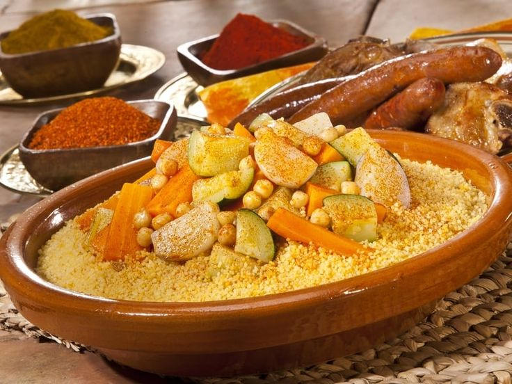
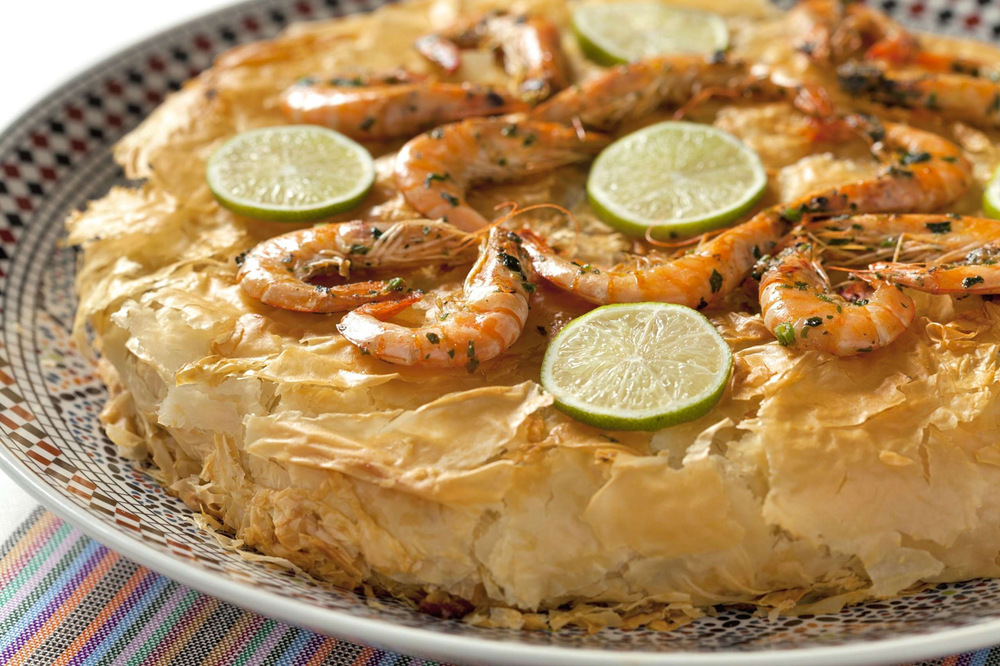

🛫 Informations pratiques
Vol : Environ 3h30 depuis Paris
Compagnies : Air France, Royal Air Maroc, Transavia
Climat : Chaud et ensoleillé la plupart de l'année ; soirées fraîches selon la saison.
🕌 À découvrir

Jardin Majorelle — Un havre de bleu et de verdure

Place Jemaa el-Fna — Spectacle vivant au crépuscule

Palais de la Bahia — Splendeur andalouse
🍴 Saveurs de Marrakech
Impossible de visiter Marrakech sans se laisser tenter par ses spécialités ! Voici quelques plats et douceurs typiques à découvrir :
🍲

🥘

🥧

🍢

🫖
🍯